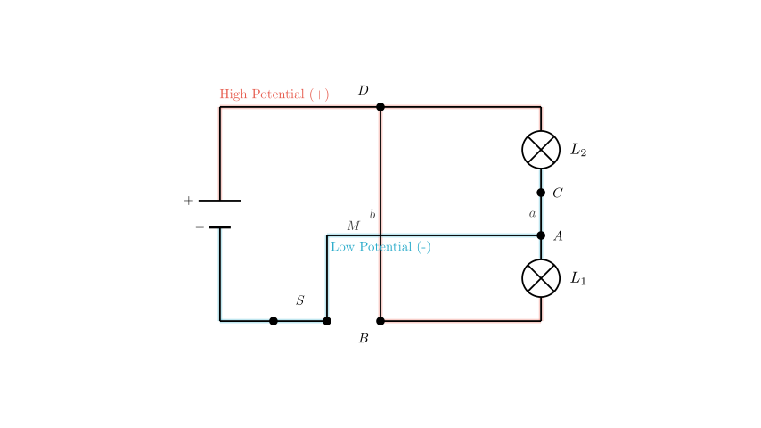

problem_4_physics_g9
Problem Statement
The circuit is shown in the figure. Which of the following analyses is incorrect?
- A. After S is closed, the circuit will short-circuit.
- B. After S is closed, L₁ and L₂ are connected in parallel and both can light up.
- C. To make L₁ and L₂ connected in series, wire *b* can be removed.
- D. If wire *M* is moved from terminal B to terminal A, then lamps L₁ and L₂ are connected in parallel.
Solution Approach
To solve this problem, we need to translate the physical wiring diagram into a circuit schematic to analyze the current paths. We will: 1. Trace the current flow from the positive terminal of the power source. 2. Identify nodes and connections to determine if the bulbs are in series, parallel, or if a short circuit exists. 3. Evaluate each option (A, B, C, D) by conceptually modifying the circuit as described. 4. Identify the false statement among the options.
 Step 1: Analyzing the Original Circuit (Options A and B)
Step 1: Analyzing the Original Circuit (Options A and B)
Let's trace the circuit connections based on the diagram:
- The positive terminal (+) of the battery connects to terminal D of lamp \(L_2\).
- A wire (labeled b) directly connects terminal D to terminal B of lamp \(L_1\).
- A wire (labeled M) connects terminal B to the switch S.
- The switch S connects to the negative terminal (-) of the battery.
Analysis of Current Flow
When switch S is closed, current flows from the positive terminal to D. At D, the current has two choices: go through lamp \(L_2\) or go through the conductive wire b. Since wire b has negligible resistance, the current flows directly to B. From B, it flows through wire M and the switch back to the negative terminal.
Conclusion for A and B
- The path Battery(+) → D → B → S → Battery(-) contains no electrical load (bulbs), only wires and a switch. This creates a short circuit.
- Because the current bypasses the bulbs through this low-resistance path, the bulbs will not light up, and the battery or wires could be damaged.
- Therefore, Option A is correct (a short circuit occurs).
- Option B is incorrect (the bulbs do not light up; they are shorted out). Since the question asks for the *error*, B is our target answer.
 Step 2: Analyzing Option C (Series Connection)
Step 2: Analyzing Option C (Series Connection)
Option C suggests removing wire b. Let's see what happens to the path of the current: 1. Current leaves the positive terminal to D. 2. Without wire b, current *must* go through lamp \(L_2\) to reach terminal C. 3. From C, it travels through wire a to terminal A. 4. From A, it flows through lamp \(L_1\) to terminal B. 5. From B, it goes through wire M and the switch to the negative terminal.
Conclusion for C
The current flows sequentially through \(L_2\) and then \(L_1\) (\(L_2 \rightarrow L_1\)). There is only one path for the current, which is the definition of a series circuit.
- Therefore, Option C is correct.

Step 3: Analyzing Option D (Parallel Connection)Option D suggests moving wire M from terminal B to terminal A. Let's analyze the nodes (junction points):
- High Potential Node: The positive terminal connects to D. Wire b connects D to B. So, points D and B are at the same high potential.
- Low Potential Node: The switch (connected to negative) now connects to A. Wire a connects A to C. So, points A and C are at the same low potential.
Connections
- Lamp \(L_1\) is connected between A (Low) and B (High).
- Lamp \(L_2\) is connected between C (Low) and D (High).
Conclusion for D
Since both lamps are connected independently across the same high and low potential points, the current splits to go through both simultaneously. This is a parallel circuit.
- Therefore, Option D is correct.
Final Answer
The analysis shows that statements A, C, and D are physically correct descriptions of the circuit behavior. Statement B claims the bulbs will light up in parallel in the original configuration, but we proved the original configuration is a short circuit where bulbs do not light.
The error is in option B.